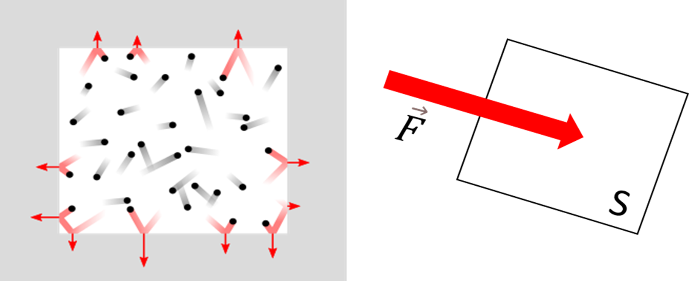
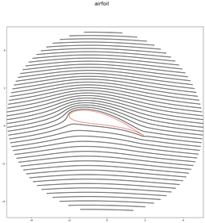
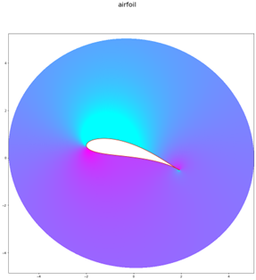
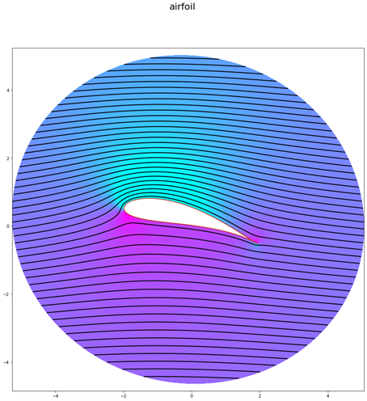

Le poids est la force exercée sur un corps matériel, elle est proportionnelle à la masse de ce corps et à l’intensité de la pesanteur au point où se trouve le corps.
Elle est donnée par la relation suivante : \(\vec{P}=m\vec{g}\)
On peut aussi utiliser la force d'attraction gravitationnelle pour être plus précis, qui décrit l’attraction mutuelle entre deux corps. Son expression est $$F_g = G\frac{m_1 m_2}{r^2}$$ avec, \(G=6,67\cdot{10}^{-11}N\cdot{m}^{2}\cdot{kg}^{-2}\) : la constante de gravitation ; \(m_1\ m_2\) : les masses des deux corps et \(r\) la distance entre le centre des deux corps.
Arthur Lafferriere
20 mai 2023
20 mai 2023
Bilan des forces
Dans cet article nous allons expliquer comment vole un article. Pour comprendre comment vole un avion, nous devons nous intéresser aux forces qui rentrent en jeu en vol. Nous retrouvons les quatre forces principales suivantes :
-
Le poids
-
La poussée
La poussée ou plutôt la force de poussée est le résultat de l’accélération de l’air passant dans un réacteur. Elle permet à l’avion d’avancer.
-
La trainée
En mécanique des fluides, la traînée est la force qui s’oppose au mouvement d’un corps dans un liquide ou un gaz. Mathématiquement c’est la composante des efforts exercés sur le corps, dans le sens opposé à la vitesse relative du corps par rapport au fluide. En aéronautique, la traînée notée Rx est de même sens que le vent relatif.
Elle est donnée par la relation suivante : \(Rx=\frac{1}{2}v^2\rho Sc_x\) -
La portance
En mécanique des fluide, la portance est la force perpendiculaire à la direction de la vitesse d’un corps se déplaçant dans un fluide, et qui soutient ce corps. Pour une aile d’avion, on peut exprimer la portance avec l’expression suivante : \(F_z=\frac{1}{2}\rho v^2SC_z\)

Lorsqu’un avion est en vol en palier rectiligne uniforme (voler dans la même direction, les ailes à l’horizontal et à une altitude constante et à une vitesse choisie), la somme des forces extérieures doit être nul. On utilise donc le principe fondamental de la dynamique \(\sum{\vec{F}}_{ex}=m\vec{a}\). Dans notre cas \(\vec{a}=\vec{0}\). Pour remplir cette condition, on remarque en projetant sur \(\vec{x}\) et \(\vec{z}\) que le Poids et la Portance se compensent. On observe le même constat pour la Poussée et la Trainée.
Nous avons expliqué comment un avion faisait pour se maintenir en l’air. Intéressons-nous maintenant à comment l’avion fait pour augmenter son altitude. On remarque que la force qui permet à l’avion de s’élever dans le ciel est la Portance.
Comment l’avion génère-t-il sa portance ?
La portance repose sur la déflexion d’une masse d’air par une aile en mouvement. Celles-ci sont conçues pour créer une différence de pression entre l'intrados et l'extrados de l'aile. L’extrados est la partie supérieure de l’aile et l’intrados sa partie inférieure.

La portance est donc la différence de pression ente la partie supérieur et inferieur de l’aile.
La pression
La pression est la partie isotrope du tenseur des contraintes.
En reformulant, la pression, que nous noterons P, est par définition une grandeur physique, qui traduit les échanges de quantité de mouvement dans un système thermodynamique, et notamment au sein d'un solide ou d'un fluide.
La force de pression est la « force » exercée par le choc des particules sur une surface.
- Norme : la force \(F\), divisé par la surface \(S\), \(P=\frac{F}{S}\)
- Unité :
- Le pascal, noté \(Pa\), est l'unité de système internationnal (USI).
- Le bar : \(1bar=10kPa\)
- L'atmosphère : \(1 atm=1013,25 hPa\) (pression standard au niveau de la mer à 15°C)
- Il existe autant d’unités que de domaines d’études utilisant la pression, comme le millilitre de mercure, etc.
- Dimension : \(ML^{-1}T^{-2}\)
Mais à quoi peut-elle servir ?
Par exemple, la pression atmosphérique représente la force qu’exerce les particules sur une surface, notamment les avions et permet de savoir l’altitude de l’aéronef. En effet, plus on monte haut dans l’atmosphère, moins il y a d’air, on peut ressentir ce phénomène en allant en montagne, où il est plus compliqué de respirer. S’il y a moins d’air, moins de particules, alors la pression aussi diminue, la force qu’exercera les particules sur l’avion sera plus « faible ». Un altimètre est capable de mesurer ces variations de pressions, et donc les variations d’altitude indirectement.
Pour montrer ce principe, nous allons le modéliser. Pour cela nous allons d’abords modéliser le flux d’air autours d’un profil d’aile. Où le flux d’air correspond au déplacement d’une masse d’air.
L’air peut être modéliser comme un champ vectorielle uniforme. On peut tracer ce champ par des lignes parallèles entre elles et qui suivent les vecteurs du champ uniforme. Lorsqu’une aile, ici le profil d’ail rentre dans ce champ vectoriel. Il perturbe l’écoulement uniforme de l’air. Il est obligé de s’adapter au profil. On peut très bien voire la déformation du flux sur l’image précédente. Les lignes qui étaient toutes à une distance égale et toutes parallèles, se courbe et se rapproche les unes des autres pour s’adapter à l’obstacle qui est le profil. On peut supposer que plus les lignes sont éloignées plus la pression est grande, a l’inverse plus elles sont proches plus la pression est base. On parle ainsi de surpression et de dépression.
Pour vérifier cela on peut modéliser le champ de pression. Ici on modélise un champ scalaire.
On remarque immédiatement qu’il y a une dépression sur la partie supérieure de l’aile et une surpression sur la partie inferieur. La différence de pressions ainsi crée entre l’intrados et l’extrados crée une force ascendante qui soulevé l’aile dans l’aire. On peut également remarquer que la pression de l’air localement est un champ scalaire uniforme. Comme pour le flux d’air, le profil d’aile agit comme une perturbation. La pression qui était uniforme s’adapte au passage de l’aile pour retrouver son uniformité après le passage de la perturbation. La pression ainsi que le flux sont très liées. On peut les modéliser ensemble. Ce qui nous donne.
Nous avons expliqué l’origine du phénomène de portance. On peut se demander si la portance dépend d’autre éléments ?
La portance comme montrée plus haut dépend du profil d’aile et du flux d’air. Plus précisément, les facteurs qui entre en compte sont :
- La vitesse du flux d’aire par rapport au profil d’aile, on appelle cette valeur vitesse aérodynamique noté \(V_a\).
- La forme du profil impacte également la portance, en effet le flux d’air ou plus précisément la déformation qu’il subis dépend de la forme du profil. Elle se traduit par la surface S et les coefficients aérodynamiques \(C_x\) et \(C_z\).
- L’incidence du profil est aussi un facteur important. En fonction de cette angle le flux d’aire sera plus ou moins déforme et la pression plus ou moins grande.
Pour illustrer ce dernier principe nous allons modéliser le profil d’ail dans un flux d’air avec une vitesse constante. Seule l’angle d’incidence change au cours du temps.

Dans cette modélisation, nous pouvons remarquer que l’incidence impacte énormément la différence de pression ente l’extrados et l’intrados. On peut également remarquer 2 informations importantes. Tout d’abord, si l’incidence est trop petite, la dépression se situe sur l’intrados, la différence de pression est négative. Cela a pour conséquence de poussé l’avion vers le sol. Ensuite, plus l’incidence augmente, plus la portance augmente. Cependant cette modélisation ne prend pas en compte les turbulences crée par l’aile lorsque l’air passe autour de l’aile. L’avion ne doit pas avoir un angle d’incidence trop élever sinon la portance commence à diminuer et il peut décrocher. Cette incidence maximale à ne pas dépasser ce situe ente 15° et 20° en fonction du type d’appareille.
Toutes ces modélisations ont été réalisées grâce a la méthode de Joukovski. Pour en apprendre plus sur cette méthode, nous vous invitons à vous renseigner sur notre projet Joukovski.